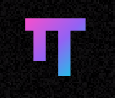
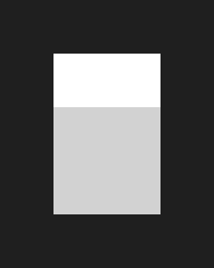

fiktive Händler
Sechs Gewerke von Supermarkt bis Blumenladen, sieben Filialen im Demo-Netz.
Wie wir gebaut haben


ohmypi
opencode GitHub Copilot
GitHub Copilot
KI beschleunigt Entwurf, Code und Prüfung. Auswahl, Freigabe und Verantwortung bleiben beim Team. Logos: Simple Icons (CC0), Marken der jeweiligen Inhaber.
TAB blendet die Werkzeuge aus · Esc schließt Panels
Folie wählen · Esc schließt